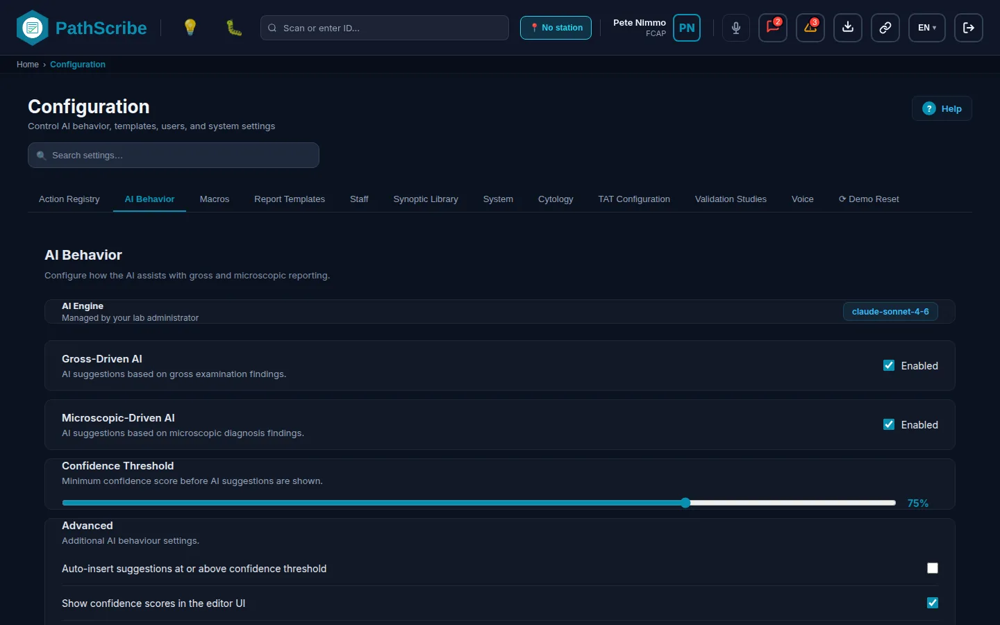
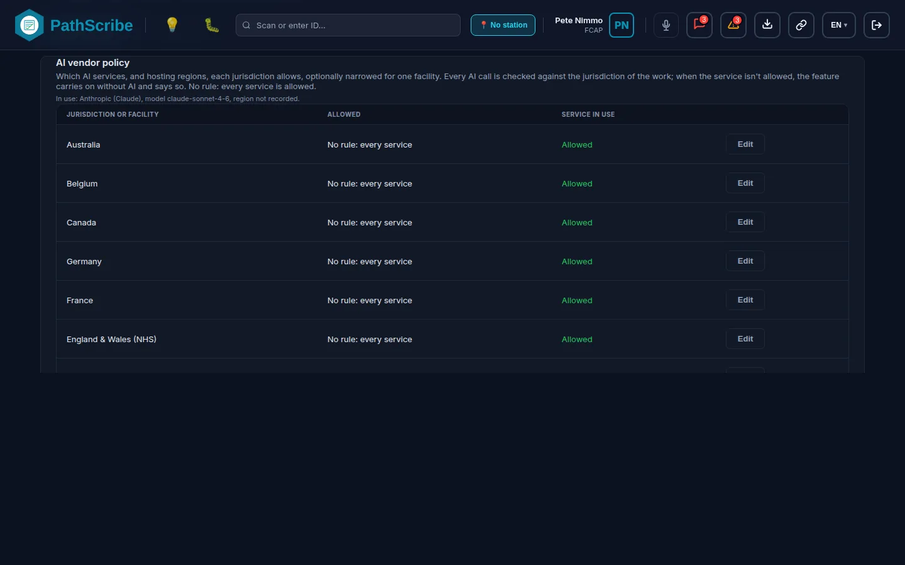
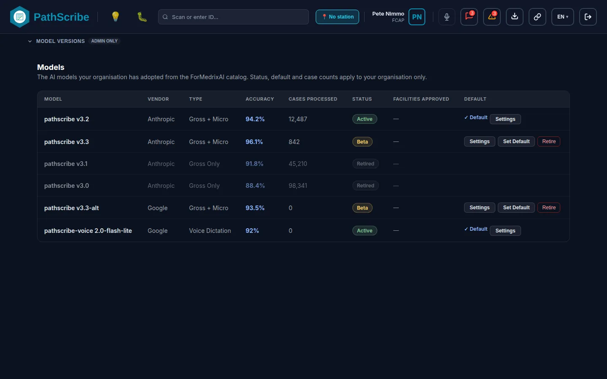
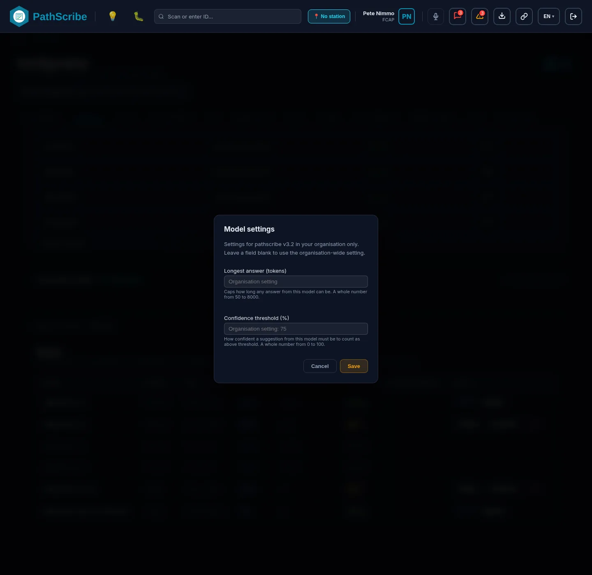
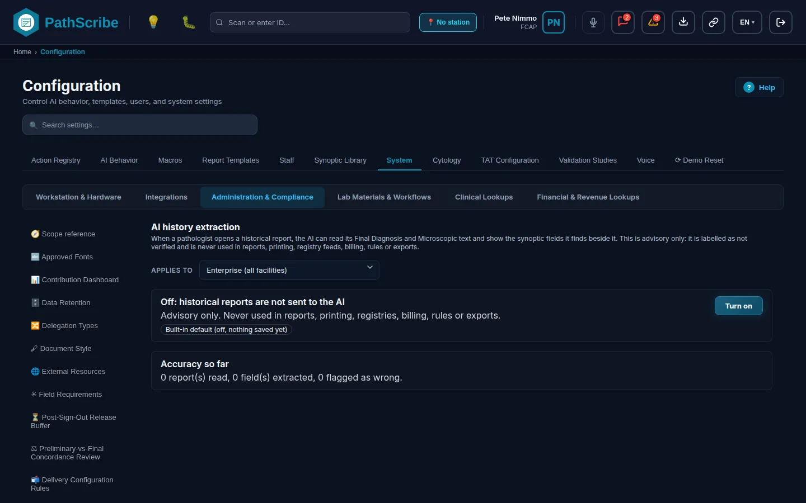
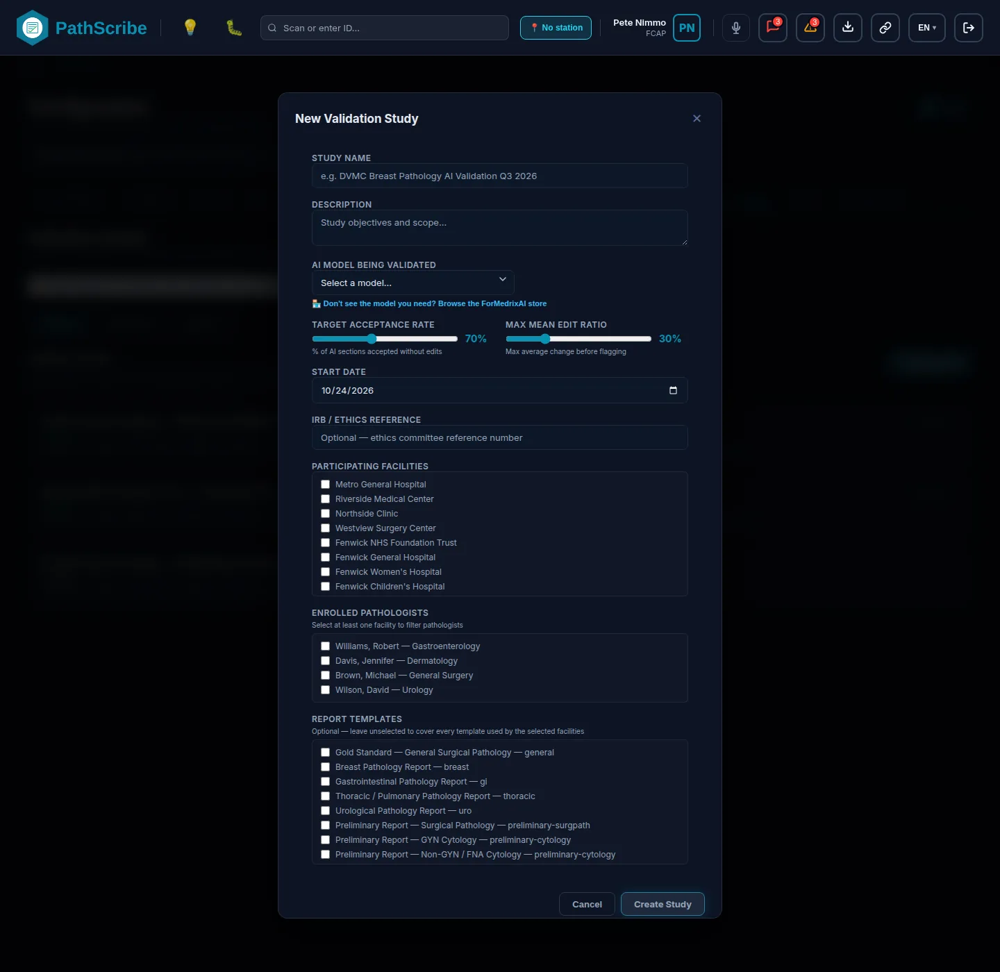
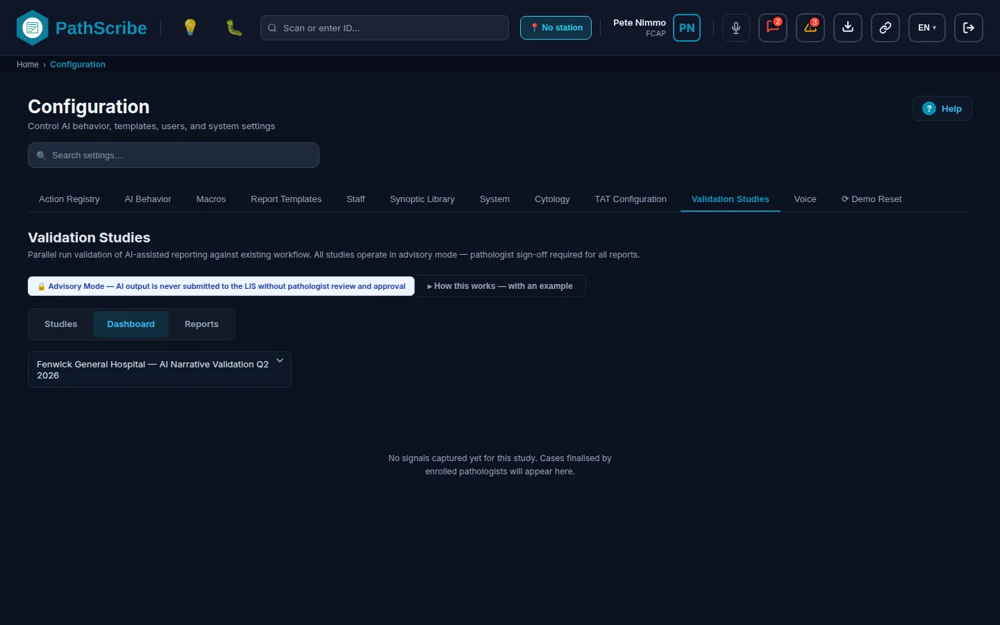

# Tier 4: The PathScribe Embedded AI Framework
Tier 4 covers every setting that decides whether, where and how PathScribe uses artificial intelligence (AI), and the checks that keep a pathologist in control of the result. Read this chapter with one fact in mind: the framework is narrower than its outline. PathScribe calls an external language model for report and dictation help, and it ingests results from vendor image-analysis products. It does not contain a computer-vision engine, a tumour detector, a cell counter, a biomarker scorer, a standalone natural language processing (NLP) engine or a model-weight calibration tool. Each of those is labelled Not built below, with the nearest thing that does exist.
Production runs on Microsoft SQL Server behind an ASP.NET Core API. Most of the screens in this chapter work on the demonstration data in the browser today, and the status line on each screen says how far its server contract goes.
# How Tier 4 is set up
Complete Tiers 1 to 3 first. Tier 4 reads facilities, physicians, specimen types and code systems from them. Then work through the screens in this order. Each screen's part 4 repeats its own prerequisites.
- AI Behavior (tab): choose the AI service and model, set the vendor policy, the confidence threshold and the Orchestrator default.
- Validation Studies (tab): the entry point for the evidence that a model works for your data.
- Validation Studies: Studies: create, approve and activate a study.
- Validation Studies: Reports: close a study and print the report that grades it.
- AI Instructions: approve the text that the clinical mismatch check sends to the model.
- Clinical Mismatch Rules: set when a mismatch alerts, logs or blocks sign-out.
- AI history extraction: turn on the advisory read of historical cases.
- Smart Capture: the billing-suggestion prototype switch and its production checklist.
Validation Studies: Dashboard is a day-to-day page and is not part of setup. A model's facility override needs a published report template and a passing study, so finish Chapter 6 for the templates before you rely on a facility override.
# AI output governance and the regulatory profile
Status: Built in the browser on the demonstration data. The server must repeat the sign-out rule below before production (contract in docs/product/REGULATORY_PROFILE.md).
PathScribe treats AI output as a draft that a pathologist must vouch for. These rules apply on every install; none of them is a setting on a screen.
- Regulatory profile. A build setting,
VITE_REGULATORY_PROFILE, choosesdocumentation(the default) orclinical_support(kept for later, not validated). From Batch 706 (Pete, Oct 28 2026) no clinical screen shows an AI confidence percentage in either profile (a plain "Check source" prompt, "Source found in report text" or a "Strong match" / "Possible match" label appears instead). The Confidence Threshold settings below remain numeric because they are settings you type, not displays of an AI result. In the documentation profile a clinical mismatch is a plain low-risk flag that is logged and never holds sign-out. The thresholds and Block rules on Clinical Mismatch Rules are kept forclinical_support. The profile is read when the application starts; changing it needs a new build. - AI-drafted narrative must be accepted. Sign-out stops while any AI-drafted narrative section has not been accepted, edited, or kept as the earlier text.
- Unconfirmed AI values stay out of the signed report. Before the sign-out or Finalize window opens, every optional synoptic or grossing field that still holds an unchanged, unverified AI value is cleared. The AI suggestion stays, so the pathologist can cancel and Confirm. Required fields with an unverified AI value stop the sign-out as before. Values filled by auto-insert or by the Orchestrator button start as unverified.
- What is written to the audit log (counts and names only, never clinical text):
AI_NARRATIVE_ACCEPTED,AI_NARRATIVE_ACCEPTED_EDITED,AI_NARRATIVE_REJECTED,AI_CODE_BOUND,AI_VALUES_AUTOFILLED,AI_VALUES_OMITTED_AT_SIGNOUT. EachAI_CODE_BOUNDentry also records the code's wording from the terminology dictionary, the model and provider, the model's own confidence, whether the code was found in the dictionary (or the billing code table), which part of the case it was taken from (and the specimen), and whether the pathologist changed it before binding it. - Known limits. The omission and the audit entries are written by the browser; the production API must apply and write them itself. Autopsy and cytology reports carry no AI suggestions today. The wording in this section is a description of behaviour, not a statement that PathScribe meets any regulation.
Status of the six outline areas
| Area | Status | Where it is configured |
|---|---|---|
| AI infrastructure and model architecture | Built for the screens and settings; Partial for the server side (see each screen) | Configuration, AI Behavior tab; Facility Dictionary, AI & Performance tab (Chapter 2) |
| Specimen tracking and grossing computer-vision assist | Not built. A vendor dictionary and a rule-based billing prototype exist | Vendor Integrations, category gross imaging (Chapter 4); Smart Capture |
| NLP and auto-structuring engine | Partial. Individual features exist; no standalone engine | AI history extraction; Voice and Macros tabs (Chapter 4); report page tools |
| Digital pathology AI image analysis | Partial. Vendor result ingestion exists. Tumour detection, cell counting and biomarker scoring are Not built | Vendor Integrations, categories digital pathology AI and slide viewers (Chapter 4); QA AI discordance tab (Chapter 4) |
| Smart quality control and anomaly detection rules | Built for the screens; Demonstration for the server side of AI Instructions | Clinical Mismatch Rules; AI Instructions; Abnormal Trigger Rules (Chapter 3) |
| AI governance, human-in-the-loop thresholds, calibration | Built for governance and thresholds. Weight calibration: none exists | AI Instructions; Validation Studies; Model Versions panel on the AI Behavior tab |
# AI infrastructure and model architecture
Status: Built for the settings screens. Partial for the server: the production calls are written down, and a few are not yet connected (listed under each screen).
This section explains how an AI call is made and who decides what it uses. The screen that sets all of it, AI Behavior (tab), follows.
The AI proxy. The browser never holds an AI key. It calls PathScribe's own /api/ai/... routes and the server adds the key from a secret store such as Azure Key Vault. Routes exist for Anthropic, Google Gemini (generate, stream and model list), OpenAI, Azure OpenAI (/api/ai/azure/chat/completions), a custom endpoint, AWS Bedrock (invoke and invoke-stream), and the UMLS and National Library of Medicine terminology lookups. The server must write an audit entry for each call (without the prompt text) and rate-limit callers. The proxy that the development build uses does not exist in production. Rotating an API key is done by ForMedrixAI support in the server's secret store. No screen sets or shows a key.
Providers. The screen shows vendor names. Internally each is stored under an id named for the protocol it speaks.
| Shown as | Stored id | Models offered (first is the default when you pick the provider) |
|---|---|---|
| Anthropic (Claude) | structured_messages |
claude-sonnet-4-6 (recommended), claude-opus-4-8 (highest accuracy), claude-haiku-4-5 (fastest) |
| OpenAI (GPT-4) | chat_completions |
gpt-4o (recommended), gpt-4-turbo, gpt-4 |
| Azure OpenAI | chat_completions_managed |
gpt-4o (Azure), gpt-4-turbo (Azure) |
| AWS Bedrock | model_gateway |
anthropic.claude-sonnet-4-6-v1:0, anthropic.claude-opus-4-8-v1:0, amazon.nova-pro-v1:0 |
| Google (Gemini) | structured_content |
gemini-1.5-flash (recommended), gemini-1.5-pro |
| Self-hosted / Custom endpoint | custom |
custom |
| Mock, Demo Mode | mock |
mock-v1 |
If the stored provider id is not one of these, PathScribe uses structured_messages. A provider setting of mock or an unknown value still sends the call to the Anthropic route through the proxy (a disclosed behaviour of the proxy, not a demo shortcut). Bedrock needs a server route that signs requests and returns a normalised stream; that route is part of the proxy contract.
Which setting wins. PathScribe resolves the AI configuration in this order: a personal override (a developer view only; no screen sets it for an administrator), then the organisation's lab setting, then the build defaults VITE_AI_PROVIDER, VITE_AI_MODEL, VITE_AI_PROXY_URL, VITE_AI_GATEWAY_REGION (default us-east-1), VITE_AI_HOSTING_REGION and VITE_AI_MAX_TOKENS (default 1000). The organisation setting is stored under the key pathscribe_ai_org_config.
Which model each task uses.
| Task | Model used | Notes |
|---|---|---|
| Report and narrative help (Generate Narrative, Suggest Synoptic Fields, macro suggestions, critical-findings scan, template assignment) | The organisation's default model, or the performing facility's own model if one is set in the Facility Dictionary, AI & Performance tab | A facility may choose only a model that has a reported study graded PASS for that facility (Validation Studies: Reports). The facility's token limit and request format come with the model. |
| Dictation refinement | The organisation-wide default model of type Voice Dictation | No facility layer. A voice model becomes the default only with a PASS-graded study. Set on the Voice tab (Chapter 4). |
| AI synoptic and grossing template assignment | As report help | The confidence threshold for these two is fixed at 60 in code; there is no setting. Grossing assignment falls back to the standard tissue template. |
Vendor policy. One rule per jurisdiction, and optionally one narrower rule per facility, says which AI services and hosting regions may be used for work in that place. A call must pass the jurisdiction rule and the facility rule. With no rule, every service is allowed. Inside a rule, allowed services can be all or a list, and each allowed service can carry a list of allowed regions; no list means any region. A call whose region is not recorded is refused where regions are limited. A refusal never falls over to another service: the feature carries on without AI and shows "AI is not available for this jurisdiction". The mock provider is always allowed. The server must answer a refused call with 403 and the code AI_VENDOR_NOT_ALLOWED, and audit it as AI_CALL_REFUSED.
AI audit log. Each AI call writes a record of: case, section, provider, model, status (completed, error, cancelled or refused), token count, time taken, hosting region, jurisdiction, facility and feature. The log holds the latest 2000 entries and is kept in the browser until the server records it. No screen shows it.
Orchestrator mode. Orchestrator mode writes a report narrative in four fixed steps instead of one request. The engine in src/orchestrator/ is the live code. AI Behavior (tab) sets the organisation default, and a facility can override it. Step wording and order are not editable.
# AI Behavior (tab)
Status: Built
1. Navigation: Configuration tab AI Behavior 2. Maintenance item: AI Behavior (the whole tab)
3. Business purpose and scope. This tab holds the organisation's AI settings: which AI engine is in use, whether AI runs for gross and microscopic work, how confident a suggestion must be before it is shown or inserted, which service and model sit behind the calls, where the vendor policy allows calls to go, whether Orchestrator mode is on, and which model versions are available. Everything is organisation-wide. A facility can override only the model and the narrative auto-draft switch, on its own record in the Facility Dictionary.
4. Prerequisites and dependencies. The vendor policy scopes are the jurisdictions and facilities you already defined, so set those up first. Skip the facilities and the policy section can offer only the lab's own jurisdiction, so no facility rule can be written.
5. Screen.

6. Field reference. The sections appear top to bottom in this order. Changes in the first group save as you make them.
| Field Name | Data Type / Format | Required/Optional | Description & Business Logic | System Default |
|---|---|---|---|---|
| AI Engine badge | Read-only badge | Not applicable | Shows the model id now in use, or "Mock - Demo Mode" with a DEMO pill when the mock provider is selected. | Not applicable |
| Gross-Driven AI, Enabled | Yes/No checkbox (grossEnabled) |
Optional | When off, grossing completion and the assist polling skip the AI evaluation of the gross description. | On |
| Microscopic-Driven AI, Enabled | Yes/No checkbox (microscopicEnabled) |
Optional | When off, the amendment workflow, the synoptic side panel and the assist polling skip AI work on the microscopic text. | On |
| Confidence Threshold | Slider, whole number 0 to 100 (confidenceThreshold) |
Optional | The share of confidence a suggestion needs. The synoptic side panel and the synoptic report review badge use it to mark suggestions (in the default profile the badge reads "Check source" and shows no percentage). A model can carry its own value in its Settings window (below). Saves when you change it. | 75 |
| Advanced: Auto-insert suggestions at or above confidence threshold | Yes/No checkbox (autoInsertSuggestions) |
Optional | When on, the synoptic side panel fills a suggestion into an empty field without waiting for the pathologist to accept it, if its confidence meets the threshold. The value stays unverified (tinted), the fill is written to the audit log as AI_VALUES_AUTOFILLED, and an optional field still unconfirmed at sign-out is left out of the signed report. |
Off |
| Reset to Defaults | Button | Not applicable | Puts all the behaviour settings above back to their defaults. Does not change the provider, the vendor policy or the Orchestrator switch. | Not applicable |
AI Provider Settings
Shown with the heading AI Provider - Organisation Settings only to a person whose role is admin, pathologist-admin or superadmin. Anyone else sees a note that the provider is managed by the administrator. A warning box reminds you that case text leaves the system for the chosen service. Fields that do not apply to the chosen provider are hidden.

| Field Name | Data Type / Format | Required/Optional | Description & Business Logic | System Default |
|---|---|---|---|---|
| AI Provider | Choice, grouped Production Providers and Development & Demo | Required | Selects the service. Picking a provider sets Model to that provider's first model. A short hint under the field describes the provider. | Anthropic (Claude) when nothing is stored |
| Model | Choice from the provider's list (table above) | Required | The model id sent on each call. | First model of the provider |
| Azure Resource Endpoint | https link; placeholder https://my-org.openai.azure.com |
Required for Azure OpenAI | Your Azure resource address. Shown only for Azure OpenAI. | None |
| Deployment Name | Text | Optional | The Azure deployment to call. Kept only when an endpoint is also set. Shown only for Azure OpenAI. | None |
| AWS Region | Text | Optional | The Bedrock region. Shown only for AWS Bedrock. | us-east-1 |
| Hosting region | Text; placeholder eu-west-1 |
Optional | The region where the vendor processes the call, as the vendor names it. Recorded on each call so the vendor policy can check it. Shown for every provider except AWS Bedrock and Mock. | Blank (region not recorded) |
| Endpoint Base URL | https link | Required for Custom | The base address of an OpenAI-compatible service. PathScribe posts to /chat/completions under it. Shown only for Self-hosted / Custom endpoint. |
None |
| Policy warning | Read-only message | Not applicable | Appears before you save a service or region that a jurisdiction or facility rule in the policy below disallows. | Not applicable |
| Save Org Config | Button | Not applicable | Stores the organisation setting. Needs config:ai-provider:manage. If you leave the tab with unsaved changes you are warned. |
Not applicable |
| Test Connection | Button | Not applicable | Sends one test request (feature connection-test, 20 tokens, asking for the exact reply "PathScribe AI connection OK"). The result reads Testing, Connection OK or Failed with the error. |
Not applicable |
| Clear Override | Button | Not applicable | Appears only in the developer view, where a personal override can be set. Not shown to an administrator. | Not applicable |
Where PathScribe keeps data
A read-only card.
| Field Name | Data Type / Format | Required/Optional | Description & Business Logic | System Default |
|---|---|---|---|---|
| Database | Read-only text | Not applicable | The region of the database, taken from the server's /api/config. Shows Not reported when the server does not give it (the demonstration has no server). |
Not reported |
| File storage (reports, exports) | Read-only text | Not applicable | The region of file storage, from the same source. | Not reported |
| AI service | Read-only text | Not applicable | The hosting region set in AI Provider Settings. | Not recorded |
AI vendor policy
A table of rules, one row for the lab's own jurisdiction and one for each facility you serve, plus an Add a facility rule control. A facility rule narrows its jurisdiction's rule. The audit event for a change is AI_VENDOR_POLICY_CHANGED (before and after).

| Field Name | Data Type / Format | Required/Optional | Description & Business Logic | System Default |
|---|---|---|---|---|
| Jurisdiction or facility | Read-only text (facility shown as facility and jurisdiction) | Not applicable | The scope of the rule. | The lab's jurisdiction, plus each served facility |
| Allowed | Read-only text: No rule: every service, Every service, or the list of services | Not applicable | What the rule permits. | No rule: every service |
| Service in use | Read-only text | Not applicable | Shows the service, model and region now in use and whether this scope allows it: Allowed, Not allowed: service, Not allowed: region or Not allowed: region not recorded. | Not applicable |
| Actions: Edit, Remove rule | Buttons | Not applicable | Edit opens the rule editor below. Remove rule deletes the rule, so the scope goes back to allowing every service. | Not applicable |
| Add a facility rule, Choose a facility... | Choice of served facilities | Optional | Starts a rule for one facility. | None |
| Allow every service | Yes/No checkbox | Optional | Allows all services. When off, tick the services to allow. | On for a new rule |
| Allowed services | One checkbox per AI service | Required when Allow every service is off | At least one service must be allowed, or the save is refused (Allow at least one service, or remove the rule). | None |
| Allowed regions for (service) | Text, regions separated by commas, for example eu-west-1, uksouth |
Optional | Leave empty to allow any region. Regions are trimmed, lower-cased and de-duplicated. A blank entry, or regions on a service that is not allowed, are refused. | Empty (any region) |
| Save rule | Button | Not applicable | Saves the rule. The result reads Saved or the reason it was refused. | Not applicable |
Orchestrator Config
A collapsible section. The badge ON - click to toggle or OFF - click to toggle is the organisation-wide default for Orchestrator mode.

| Field Name | Data Type / Format | Required/Optional | Description & Business Logic | System Default |
|---|---|---|---|---|
| ON/OFF switch | Yes/No switch | Optional | The organisation default. A facility can override it with Narrative auto-draft (Inherit org default, Enabled for lab, Disabled for lab) in the Facility Dictionary, AI & Performance tab. Saving needs config:ai-provider:manage. |
ON |
| Steps summary | Read-only text, "N of 4 generation steps active" | Not applicable | Counts the active steps. | 4 of 4 |
| Step cards | Read-only: step name, ACTIVE or DISABLED, AI Instruction, Context Fields | Not applicable | Four fixed steps run in order: Administrative & Clinical Header, Specimen & Gross Description, Synoptic Data Summary, Ancillary Testing & Final Diagnosis. Earlier steps give context to later ones. | Fixed in code |
Model Versions
A collapsible section marked Admin only that holds the models panel.

| Field Name | Data Type / Format | Required/Optional | Description & Business Logic | System Default |
|---|---|---|---|---|
| Model | Read-only text | Not applicable | The model's name. | Not applicable |
| Vendor | Read-only text | Not applicable | The model's maker. | Not applicable |
| Type | Read-only: Gross Only, Micro Only, Gross + Micro, Diagnosis Only, Voice Dictation | Not applicable | What the model is for. | Not applicable |
| Accuracy | Read-only percentage | Not applicable | The benchmark figure recorded for the model. | Not applicable |
| Cases Processed | Read-only whole number | Not applicable | Cases the model has handled for your organisation. | 0 for a newly adopted model |
| Status | Read-only: Active, Beta, Retired | Not applicable | A model adopted from the ForMedrixAI store starts as Beta. | Not applicable |
| Facilities Approved | Read-only list | Not applicable | Facilities whose pinned model is this one. | Not applicable |
| Default | Read-only mark | Not applicable | The organisation's default model. | Not applicable |
| Set Default | Button | Not applicable | Makes the model the default. A voice model cannot become the default without a reported study graded PASS. | Not applicable |
| Retire | Button, then a confirmation | Not applicable | Retires the model. The confirmation names the facilities pinned to it. The default model cannot be retired. | Not applicable |
| Settings | Button | Not applicable | Opens the Model Settings window below. | Not applicable |
Model Settings window

| Field Name | Data Type / Format | Required/Optional | Description & Business Logic | System Default |
|---|---|---|---|---|
| Longest answer (tokens) | Whole number 50 to 8000 | Optional | The most the model may write in one reply. Blank uses the organisation setting. | Blank |
| Confidence threshold (%) | Whole number 0 to 100 | Optional | This model's own threshold. Blank uses the organisation Confidence Threshold. | Blank |
Anything else is refused with "Enter whole numbers within the ranges shown, or leave the field blank". These are the only two per-model overrides that exist.
7. Permissions. Open the screen: screen:configuration:open. The tab is view-only for a person who holds none of these four: config:ai-behavior:manage (behaviour settings and Reset to Defaults), config:ai-provider:manage (provider settings and the Orchestrator switch), config:ai-model:manage (set default, update, retire and adopt a model) and config:ai-vendor-policy:manage (the vendor policy). The AI Provider panel also needs the role admin, pathologist-admin or superadmin, which is a role check, not a capability check. Admin and Lab Director hold the four capabilities by default through the configuration groups, and Superadmin holds everything except config:ai-prompt:approve, which is withheld for separation of duties (the Lab Director approves AI instructions; ForMedrixAI support never does). The vendor policy change is audited as AI_VENDOR_POLICY_CHANGED. A change to the behaviour settings records only the permission check, not what changed.
Known limits.
- Three settings that nothing read ("Show confidence scores", "Suggest macros", "Filter by subspecialty") were removed in Batches 682 and 687. Whether confidence scores show is decided by the regulatory profile (see AI output governance above), not a checkbox.
- The behaviour settings and the vendor policy have server contracts (CONFIG_SERVICES_API.md, AI_VENDOR_POLICY_API.md; models in MODELS_API.md). Until the server is connected they work on the demonstration data in the browser.
- Step wording, order and field mapping in Orchestrator Config are Planned: the screen says "configurable in a future release".
- The AI spell-check was retired and has no setting.
- No setting turns off the AI critical-findings scan on its own. It follows the provider, the vendor policy and the Abnormal Trigger Rules.
- The confidence floor for an "Abnormal" finding is 50 (Batch 655). It is a constant in the code, not yet a setting, so a laboratory cannot change it here.
- The Codes window (Batch 656). Each suggested medical code is confirmed two ways: by looking up the code itself, and, side by side, by the AI's own wording; either one confirms it. A code whose lookup fails stays out of the list and is counted in a note, as before. SNOMED CT checks go through the server route that holds UMLS_API_KEY; restart the development server after editing .env.
- "Checked origin" on a suggested code (Batch 699). Under each suggested code the window says where in the case the code came from, for example Checked origin: the microscopic description (with the specimen when the case text names one), or Origin not stated. The software checks only that the part of the case the AI named exists and holds text, and that a named specimen appears in that text; no person verifies it, and the screen never says "verified". Hovering the line shows that note. There is no setting. The audit entry for a bound code (AI_CODE_BOUND) records the origin. The wording is machine-translated in the five other languages and awaits native review.
- Similar Cases (Demonstration) (Batch 655). The list in the Patient History window, formerly named "AI Matched Cases", is scored by fixed rules on demonstration data. No AI is called, and each percentage is case similarity, not a model confidence.
# Specimen tracking and grossing computer-vision assist
Status: Not built for computer vision. Two nearby things exist and are described here so no one mistakes them for it.
PathScribe has no computer-vision engine for specimens. Nothing in the product reads a photograph of a specimen, a cassette or a slide to identify it, count blocks, measure a lesion or track it. The nearest things that exist are these.
- The grossing imaging vendor dictionary. A list of imaging vendors (for example PAX-it!/PAXcam, PathoZoom and MacroPATH, named in the interface comment) and how to reach each: name, how the link is authenticated (none, signed link, OAuth 2 bearer token or mutual TLS), the https base address, and whether the vendor supports telepathology. It is one category (
gross_imaging) of Vendor Integrations in Chapter 4, which documents its fields. It holds addresses only and performs no image analysis. The grossing camera control in the case is plain photo capture; it stores the picture inline, which is flagged as not compliant, and moving it onto this vendor category is deferred. - Grossing Hardware (Chapter 2) for scales, cameras and barcode devices.
- Smart Capture, below. Despite the name it calls no AI model and looks at no image. It is a fixed rule set that suggests billing lines.
# Smart Capture
Status: Built (prototype). It works on the demonstration data and has a server contract (SIGNATURES_SMART_CAPTURE_API.md), and the case drawer is labelled "Prototype, not compliance-reviewed".
1. Navigation: Configuration tab System > group Lab Materials & Workflows 2. Maintenance item: Smart Capture
3. Business purpose and scope. Smart Capture suggests Current Procedural Terminology (CPT) charge lines for a case from the specimen description words, the block count and the stain counts. The rules are fixed and versioned (sim-rules-1.0): SC-LEVEL (88302 to 88309 by specimen level), SC-SPECIAL (88312), SC-IHC-FIRST and SC-IHC-ADDL (88342 and 88341) and SC-DECAL (88311). It is not AI and not computer vision. The flow is suggest, review (accept or reject each line), approve (a pathologist confirms) and export. In the demonstration the export goes to a simulated engine. This screen switches the prototype on or off and records the production checklist that must be complete before an export to a real interface engine is allowed.
4. Prerequisites and dependencies. The rules need CPT switched on for the jurisdiction in Code Systems. Skip that and the drawer suggests nothing and reports CPT_OFF.
5. Screen.

6. Field reference.
| Field Name | Data Type / Format | Required/Optional | Description & Business Logic | System Default |
|---|---|---|---|---|
| Offer the Smart Capture drawer in the billing review | Yes/No switch | Optional | When off, the Smart Capture drawer is not offered in the case Billing panel. Audited as "Smart Capture Prototype Switched". | On |
| Clinical validation done | Yes/No tick; records who ticked and when | Optional | Production checklist item. Unticking any of the six closes the export gate. Audited as "Smart Capture Checklist Changed". | Not ticked |
| Security review done | Yes/No tick; records who and when | Optional | Production checklist item. | Not ticked |
| Privacy review done | Yes/No tick; records who and when | Optional | Production checklist item. | Not ticked |
| Legal review done | Yes/No tick; records who and when | Optional | Production checklist item. | Not ticked |
| Claims and coding policy review done | Yes/No tick; records who and when | Optional | Production checklist item. | Not ticked |
| Real receiving system tested | Yes/No tick; records who and when | Optional | Production checklist item. | Not ticked |
| Allow export to a real interface engine | Yes/No switch | Optional | Disabled until all six ticks are set. When off, export goes only to the simulated engine. Audited as "Smart Capture Production Gate Changed". | Off |
7. Permissions. Open the screen: screen:configuration:open. Change any setting: config:smart-capture:manage (Admin and Lab Director by default). In the case, billing:smart-capture:review, billing:smart-capture:approve and billing:smart-capture:send go to the Pathologist role. Every change above is audited.
Known limits. The rules are a prototype and have not been compliance-reviewed; the ticks record that someone says the review was done and do not carry out any review. Nothing uses AI or images. Export to a real interface engine is a gate only: no real receiving system is connected.
# NLP and auto-structuring engine
Status: Partial. Individual language features exist. A standalone NLP or auto-structuring engine does not, and there is no screen for one.
What exists today, each of which sends text to the model chosen on AI Behavior (tab) and is subject to the vendor policy:
- History extraction (AI history extraction): reads historical cases and fills structured fields as advisory information.
- Suggest Synoptic from Narrative: on the report page, fills synoptic fields from the narrative. Each suggestion carries a confidence from 0 to 100 and a quote from the source text. It works in Orchestrator and Assist modes.
- Generate Narrative from Synoptic: on the report page, writes the narrative from the synoptic data. Orchestrator mode only.
- Synoptic template assignment: the model proposes which synoptic template a case needs, with a fixed confidence threshold of 60.
- Critical-findings scan at sign-out: a negation-aware scan of narrative text only.
- Dictation refinement (Voice tab, Chapter 4) and macro suggestion (Macros tab, Chapter 4).
Not built: a general free-text-to-structured pipeline beyond the features above, a screen to configure one, and any trained clinical NLP model of PathScribe's own. The earlier Computational Sidecar was retired on 18 October 2026.
# AI history extraction
Status: Partial. The screen and the rules work on the demonstration data and the server contract is written (HISTORY_AI_EXTRACTION_API.md), but nothing has been tried against a real server. The summary hook for Assist mode is not built.
1. Navigation: Configuration tab System > group Administration & Compliance 2. Maintenance item: AI history extraction
3. Business purpose and scope. When a pathologist opens a historical case, the model can read its Final Diagnosis and Microscopic text and propose values for the fields of a structured template. The results are labelled "AI-extracted, not verified" and are advisory only: reports, printing, the registry, billing, rules and exports never use them (a test in the code guards this). It makes two model calls per case (choose the template, then fill the fields) and drops any field with confidence below 30 (fixed in code). Results are cached by a hash of the source text, and a failed run is tried again the next time the case is opened. The audit event HISTORY_EXTRACTION_RUN carries no patient text.
4. Prerequisites and dependencies. The feature needs a working AI service and the facility list. With no AI service, or with one the vendor policy refuses, nothing is extracted and the case shows no advisory data.
5. Screen.

6. Field reference.
| Field Name | Data Type / Format | Required/Optional | Description & Business Logic | System Default |
|---|---|---|---|---|
| Applies to | Choice: Enterprise (all facilities) or one active facility | Required | The scope you are viewing and changing. | Enterprise |
| State card | Read-only On or Off | Not applicable | The setting in force for the chosen scope. Resolved as the facility's own setting, then the enterprise setting, then off. | Off |
| Source tag | Read-only: Built-in default, Enterprise setting or This facility's own setting | Not applicable | Where the state came from. | Built-in default |
| Turn on / Turn off | Button | Not applicable | Sets the state for the chosen scope. | Not applicable |
| Use the enterprise setting | Button | Not applicable | Appears only when the chosen facility has its own entry. Removes it so the facility follows the enterprise. | Not applicable |
| Accuracy so far | Read-only card: reports read, fields extracted, flagged wrong | Not applicable | Counts, for the chosen scope, how many reports were read, how many fields were extracted and how many a pathologist flagged as wrong. | 0 |
7. Permissions. Open the screen: screen:configuration:open. Change: config:history-extraction:manage (Admin and Lab Director). In the case, ai:history-extraction:run and ai:history-extraction:flag go to Pathologist, Fellow and Resident, and case:clinical-history:record goes to those three and Pathologist Assistant. The vendor policy applies and refuses a disallowed service with vendorNotAllowed. Running an extraction is audited as HISTORY_EXTRACTION_RUN.
Known limits. Advisory only by design. The Assist-mode summary hook is Not built. The 30-point confidence cut-off has no setting.
# Digital pathology AI image analysis
Status: Partial. Receiving and showing results from vendor products exists. Tumour detection, cell counting and biomarker scoring performed by PathScribe itself are Not built.
PathScribe does not analyse images. It records what a vendor's product reports. The nearest thing to an AI analysis module is this chain, which is configured in other chapters:
- Vendor dictionary (category digital pathology AI in Vendor Integrations, Chapter 4): vendor name, product name, modality (free text), an FDA Cleared checkbox (an administrator's point-in-time record, not a check) and an active switch. It is seeded with Paige Prostate, Ibex Prostate Detect, PathAI AISight Dx, Proscia Concentriq AP-Dx, Hologic Genius Digital Diagnostics (cervical cytology) and BD FocalPoint GS (marked not cleared, as it is a premarket approval and not a 510(k) clearance). Slide viewer vendors (launch address templates) and whole-slide-image scan batches sit beside it.
- Result record: a status (ordered, completed, failed or timed out), findings (a free-text label, a confidence from 0 to 1 and an optional region), biomarker read-outs as free text (name and value), and a slide triage rank with a review recommendation in the style of BD's quintiles.
- Ingestion: a vendor result arrives as an inbound interface-engine event. In the demonstration, completing a Cytology Imaging batch places an AI screening order automatically with the first active cervical cytology vendor.
- Cytology worklist badge and concordance prompt: the pathologist's answer is recorded. A disagreement raises an open deficiency and never starts a corrective action by itself.
- QA AI discordance tab (Chapter 4): a per-vendor discordance report and a stalled-result report. The stalled-result timeout is set there (whole hours 1 to 720, default 24).
Not built: a PathScribe-owned tumour detector, cell counter or biomarker scorer, and any control that tunes a vendor's analysis. The real vendor integrations are not closed. The contract is DIGITAL_PATHOLOGY_API.md. Related set-up: Cytology Instrumentation (Chapter 3).
# Smart quality control and diagnostic anomaly detection rules
Status: Built for the rule screens. Demonstration for the server side of AI Instructions. There is no single "anomaly detection" module; the checks below are separate and each is documented where it is configured.
- Clinical mismatch check (Clinical Mismatch Rules and AI Instructions, this chapter): the model compares the clinical indication and history with the diagnosis, and the rules decide what a result does.
- Abnormal Trigger Rules (Chapter 3): discrete rules with the severities Abnormal, Critical and Malignant. The seeded rules are Margin Status, Perineural Invasion, Lymph Node Status and Lymphovascular Invasion.
- Critical-findings narrative scan: the model scans the narrative at sign-out, negation-aware, and sends narrative text only. It has no setting of its own.
- QA discordance trend policy (Chapter 4), the AI discordance tab (Chapter 4) and Cytology QC rules (Chapter 4).
Not built: a statistical or machine-learning anomaly detector that watches turnaround times, volumes or results across cases.
# Clinical Mismatch Rules
Status: Built. It works on the demonstration data and has a server contract (CONFIG_SERVICES_API.md, /api/clinical/clinical-mismatch-rule/*).
1. Navigation: Configuration tab System > group Administration & Compliance 2. Maintenance item: Clinical Mismatch Rules
3. Business purpose and scope. At sign-out the model compares what the clinician told the lab with what the pathologist diagnosed, and returns a kind of mismatch and a confidence from 0 to 100. These rules turn that confidence into an outcome. Below the display threshold the result is dropped. From the display threshold up to the action threshold it is low risk: the pathologist sees an alert and the QA log records it. At or above the action threshold the rule's action applies: Block makes it high risk and holds sign-out until a decision is recorded, Warn alerts, and Log records it. Decisions are recorded as RESOLVED, UNRESOLVED or DEFERRED. The full workflow is in docs/product/CLINICAL_MISMATCH_CHECK.md. One rule per kind of mismatch covers all specimen types, and you can add a rule for one specimen type.
4. Prerequisites and dependencies. The check calls the AI service set up on the AI Behavior tab, and the per-specimen-type rules pick from the active specimen types. With no AI service, or one the vendor policy refuses, the check does not run. Skip the Specimen Dictionary and the Add a rule for one specimen type list is empty.
5. Screen.

6. Field reference. Thresholds save when you leave the box or press Enter. The action saves when you choose it.
| Field Name | Data Type / Format | Required/Optional | Description & Business Logic | System Default |
|---|---|---|---|---|
| Kind of mismatch | Read-only: unexpected malignancy, cause of death, site or organ, expected malignancy absent, other | Not applicable | One row per kind for all specimen types, plus any specimen-type rows. | Not applicable |
| Specimen type | Read-only: all specimen types, or one type from the Specimen Dictionary | Not applicable | The scope of the row. | All specimen types |
| Alert from | Whole number 0 to 100 (display threshold, %) | Required | Results below this are suppressed. | 60 for every kind |
| Action at | Whole number 0 to 100 (action threshold, %) | Optional | Must be at least Alert from. Blank means the action starts at the Alert from value. | unexpected malignancy 70, cause of death 70, site or organ 65, expected malignancy absent blank, other 65 |
| Action | Choice: Block, Warn, Log | Required | What happens at or above Action at. | unexpected malignancy Block, cause of death Block, site or organ Block, expected malignancy absent Log, other Log |
| Remove | Button | Not applicable | Deletes a specimen-type rule. The all-specimens rule of a kind cannot be removed. | Not applicable |
| Add a rule for one specimen type | Choice of kind and choice of active specimen type | Optional | Creates a rule that starts as a copy of the all-types rule of that kind. A second rule for the same kind and specimen type is refused. | None |
| Amendments, corrections and addenda | Yes/No checkbox | Optional | When on, "A high-risk mismatch holds the release until a decision is recorded" also applies to amendments, corrections and addenda. | On |
A refused entry shows one of these problems: threshold out of range, action below display, duplicate, cannot remove the default, unknown action or unknown category.
7. Permissions. Open the screen: screen:configuration:open. See it: config:clinical-mismatch-rules:view (Pathologist, QA Reviewer and Lab Director by default). Change it: config:clinical-mismatch-rules:manage, which requires view and has no default role, so grant it deliberately. Without manage the screen is view-only. Changes are audited as CLINICAL_MISMATCH_RULE_CHANGED. case:clinical-mismatch:record (record a decision at sign-out) goes to Pathologist and Fellow. Separation of duties: nobody may hold config:clinical-mismatch-rules:manage together with config:ai-prompt:approve, and Superadmin is not exempt.
Known limits. The model can be wrong; the thresholds are the lab's control over how much a pathologist is interrupted. A mismatch at sign-out is advisory unless a rule's action is Block. In the default documentation profile this screen shows only a note that the rules are inactive, because every mismatch is a plain low-risk flag; the rules apply again under the clinical_support profile. The flag shows the words it relied on from the clinical side and the pathology side, checked against the case text; both quotes and whether each was found are saved in the QA record (evidenceClinical, evidenceClinicalFound, evidencePathology, evidencePathologyFound) and shown in the secondary-review queue. A flag made before Batch 685 has no quotes, and a lab whose Clinical-Pathologic Correlation activity type was saved earlier must add the four fields in Quality settings to see them labelled in exports; they hold clinical text from the case, so treat an export like the clinical indication.
# AI governance, human-in-the-loop thresholds and calibration
Status: Built for governance and thresholds. Weight calibration: none exists.
PathScribe's controls keep a person between the model and the record.
- Approved instructions. The text the clinical mismatch check sends to the model is versioned, and a second person must approve it (AI Instructions).
- Evidence. A Validation Study measures how often pathologists accept the model's suggestions unchanged, and a PASS grade is what lets a facility pin a model or a voice model become the default (Validation Studies).
- Thresholds. Every threshold in the product is listed here.
| Threshold | Value | Where set |
|---|---|---|
| Confidence Threshold (suggestions) | 0 to 100, default 75 | AI Behavior tab; per-model override in Model Settings |
| Auto-insert at or above the threshold | Off by default | AI Behavior tab, Advanced |
| Clinical mismatch display and action thresholds | 0 to 100, display default 60 | Clinical Mismatch Rules |
| Synoptic and grossing template assignment | Fixed 60 | Code; no setting |
| History extraction field cut-off | Fixed 30 | Code; no setting |
| Study target acceptance rate and maximum mean edit ratio | 70% and 30% by default | Validation Studies: Studies |
| Stalled AI screening result | Whole hours 1 to 720, default 24 | QA AI discordance tab (Chapter 4) |
Weight calibration and internal-only settings. There is no model weight calibration, fine-tuning or recalibration setting anywhere in PathScribe, and no AI setting is limited to ForMedrixAI staff. A search of the code finds only equipment and cytology calibration, which are unrelated. No capability in the catalogue is marked platform-only for AI. Two related facts are worth knowing. The API key is rotated by ForMedrixAI support in the server's secret store, and there is no screen for it. The model catalogue that the ForMedrixAI store offers is owned by the platform, and there is no staff screen for it either. Because no such setting exists, this chapter has no section marked ForMedrixAI internal only.
# AI Instructions
Status: Demonstration. The rules run in the browser over injected storage and the service has no server route of its own (HTTP_SERVICES_REMAINING.md).
1. Navigation: Configuration tab System > group Administration & Compliance 2. Maintenance item: AI Instructions
3. Business purpose and scope. The clinical mismatch check sends the model an instruction text. This screen controls that text for each of three disciplines: Surgical, Cytology and Autopsy (shown as tabs). A change goes through edit, then approval by a different person, so no one can change what the model is told alone. The case data block and the JSON answer format are fixed in code and cannot be edited here. Only the approved version is used. Version 0 is PathScribe's built-in text.
4. Prerequisites and dependencies. The text is used by the check on the AI Behavior tab's service, so the AI service is set up first. Skip it and an approved text has nothing to run on, and Test this text reports the AI as unavailable.
5. Screen.

6. Field reference.
| Field Name | Data Type / Format | Required/Optional | Description & Business Logic | System Default |
|---|---|---|---|---|
| Discipline tabs | Choice: Surgical, Cytology, Autopsy | Required | Each discipline has its own text and history. | Surgical |
| In use: version N | Read-only text | Not applicable | The approved version the check uses now. | Version 0 (built-in text) |
| Awaiting approval | Read-only text | Not applicable | The pending version, if any. A new edit withdraws the previous pending one. | None |
| Approve | Button | Not applicable | Makes the pending version the one in use. Refused for anyone who edited the text since the last approval (SELF_APPROVAL). Needs config:ai-prompt:approve. |
Not applicable |
| Reject reason | Text | Required to reject | The reason is kept in the history. | None |
| Reject | Button | Not applicable | Disabled until a reason is entered. The approved version stays in use. | Not applicable |
| Edit text | Text area, up to 6000 characters, with a counter | Required | Must not be empty, not over 6000 characters and different from the current text (otherwise: empty, too long or unchanged). | The text in use |
| Save for approval | Button | Not applicable | Creates a new pending version. | Not applicable |
| Clinical indication | Text | Optional | Sample input for the test. Filled from a built-in sample. | Sample text |
| Clinical history | Text | Optional | Sample input for the test. | Sample text |
| Findings | Text | Optional | Sample input for the test. | Sample text |
| Diagnosis | Text | Optional | Sample input for the test. | Sample text |
| Pathologist-confirmed malignant finding | Yes/No checkbox | Optional | Sample input for the test. | Off |
| Test this text | Button | Not applicable | Runs the pending or edited text on the sample once. The result is mismatch, none, not allowed (by the vendor policy) or unavailable. | Not applicable |
| History | Read-only list | Not applicable | Every version with its status: pending, approved, rejected, superseded or withdrawn. | Not applicable |
7. Permissions. Open the screen: screen:configuration:open, plus config:ai-prompt:edit or config:ai-prompt:approve. Listing versions needs config:ai-prompt:view (QA Reviewer and Lab Director). config:ai-prompt:edit has no built-in role and requires view. config:ai-prompt:approve goes to Lab Director only and is withheld from Superadmin; it requires view. Superadmin holds view and edit. Separation of duties: config:ai-prompt:approve cannot be held with config:clinical-mismatch-rules:manage. Audited as AI_PROMPT_EDITED, AI_PROMPT_APPROVED and AI_PROMPT_REJECTED.
Known limits. The server side is Not built. A person who holds only view, such as a QA Reviewer, cannot open the screen even though the list would load for them.
# Validation Studies (tab)
Status: Built. It works on the demonstration data and has a server contract (QUALITY_API.md, /api/validation-studies/...).
1. Navigation: Configuration tab Validation Studies 2. Maintenance item: Validation Studies (the whole tab)
3. Business purpose and scope. A validation study gathers evidence that an AI model works on your own cases. Pathologists work as normal; at sign-out PathScribe records, for each AI suggestion, whether it was accepted unchanged and how much it was edited. The signals are de-identified. When the study is closed the report grades the model, and only a PASS grade lets a facility pin that model. The tab has three sub-tabs, Studies, Dashboard and Reports, chosen by ?section=studies, dashboard or reports. The studies are advisory: validationMode is always advisory. A banner says so, and a How this works - with an example toggle explains the process.
4. Prerequisites and dependencies. A study validates a model chosen on the AI Behavior tab and enrols facilities from the Facility Dictionary. Skip the models and the facilities and the study form has nothing to choose.
5. Screen.

6. Field reference.
| Field Name | Data Type / Format | Required/Optional | Description & Business Logic | System Default |
|---|---|---|---|---|
| Advisory banner | Read-only text | Not applicable | States that a study is advisory. | Not applicable |
| How this works - with an example | Toggle | Optional | Shows or hides the worked explanation. | Hidden |
| Sub-tabs Studies, Dashboard, Reports | Choice | Required | Opens the matching screen below. | Studies |
7. Permissions. The tab appears only for a person whose role is admin, pathologist-admin or superadmin. That is a role check, not a capability check. Inside, the tab is view-only without config:validation-studies:manage and validation:approval:record. Both are held by Admin and Lab Director through the quality configuration group. The Lab Director role is not in the role check, so it holds the capabilities but cannot open the tab.
Known limits. See Validation Studies: Studies.
# Validation Studies: Studies
Status: Built.
1. Navigation: Configuration tab Validation Studies > sub-tab Studies 2. Maintenance item: Studies
3. Business purpose and scope. The list of studies and the form to create one. A study moves through the states draft, pending approval, approved, active, closed and reported. Buttons depend on the state: a draft has Edit, Submit for Review and Delete; a pending study has Record Approval; an approved study has Activate (refused without an IRB reference); an active study has Close Study.
4. Prerequisites and dependencies. The study form picks a model from the AI Behavior tab, active facilities, and enrolled pathologists (filtered by the facilities chosen), and optionally published report templates. Skip the physicians and the Enrolled Pathologists list is empty, so a study cannot be saved. Published templates are set up in Chapter 6; with none, leave Report Templates blank to include all templates.
5. Screen.

6. Field reference.
New Study / Edit Study form

| Field Name | Data Type / Format | Required/Optional | Description & Business Logic | System Default |
|---|---|---|---|---|
| Study Name | Text | Required | The name shown in the list and on the report. | None |
| Description | Text | Optional | Purpose of the study. | None |
| AI Model Being Validated | Choice of models | Required | Locked when you edit. A link Browse the ForMedrixAI store (new studies only) opens the store window below. | None |
| Target Acceptance Rate | Slider 50% to 100%, step 5 | Required | The share of suggestions accepted unchanged that earns a PASS. | 70% |
| Max Mean Edit Ratio | Slider 10% to 90%, step 5 | Required | The most the pathologists may edit suggestions, on average, for a PASS. | 30% |
| Start Date | Date | Required | When the study begins. | Today |
| IRB / Ethics Reference | Text | Optional | Shown on the form but not saved. The reference is recorded at the approval step. | None |
| Participating Facilities | Choice of active facilities, several | Required | Signals count only for these. | None |
| Enrolled Pathologists | Choice of pathologists, several, filtered by the facilities chosen | Required | Only their sign-outs generate signals. The first one chosen becomes the principal investigator; there is no field for it. | None |
| Report Templates | Choice of published templates, several | Optional | Blank means all templates. | All templates |
Submit for Ethics / IRB Review window
| Field Name | Data Type / Format | Required/Optional | Description & Business Logic | System Default |
|---|---|---|---|---|
| Ethics / IRB Committee Name | Text | Required | The committee the study goes to. | None |
| Submitted By | Text | Required | Who submitted it. | None |
| Expected Review Date | Date | Optional | When a decision is expected. | None |
| Notes for Committee | Text | Optional | Free notes. | None |
Record Committee Approval window
| Field Name | Data Type / Format | Required/Optional | Description & Business Logic | System Default |
|---|---|---|---|---|
| IRB / Ethics Reference Number | Text | Required | Without it the study cannot be activated. | None |
| Approved By | Text | Required | The approving person or body. | None |
| Approval Date | Date | Required | The date of approval. | Today |
| Committee Minutes Reference | Text | Optional | Where the minutes are filed. | None |
| Conditions Attached to Approval | Text | Optional | Any conditions. | None |
ForMedrixAI Store window
Lists models ForMedrixAI has published after its own regression testing that your organisation has not adopted. Each row shows the model, its publication date and ForMedrixAI benchmark figure, and an Adopt button.
| Field Name | Data Type / Format | Required/Optional | Description & Business Logic | System Default |
|---|---|---|---|---|
| Adopt | Button | Not applicable | Adds the model to your organisation as Beta, never the default, with zero cases, until your own study confirms it. Refusals: store not licensed, no organisation, not in catalogue, already adopted. | Not applicable |
7. Permissions. config:validation-studies:manage covers create, update, submit for review, activate, close and delete. validation:approval:record covers recording the committee approval. Adopting a model needs config:ai-model:manage. Admin and Lab Director hold the first two by default. The study events are audited as validation_study_created, _submitted, _approval_recorded, _activated, _closed and _deleted. Saving an edit logs validation_study_created, and activation records the literal name admin as the person.
Known limits. The store's licence check is a mock that always passes, and subscription authorisation is open work (PS-59). The IRB reference on the study form is not saved. The form does not record a second reviewer, only a committee name.
# Validation Studies: Dashboard
Status: Built.
1. Navigation: Configuration tab Validation Studies > sub-tab Dashboard 2. Maintenance item: Dashboard
3. Business purpose and scope. A read-only view of how a running or closed study is doing. Use it to watch the acceptance rate before the study closes.
4. Prerequisites and dependencies. It shows data once a study is active and pathologists have signed out cases. With no active study the study list is empty.
5. Screen.

6. Field reference.
| Field Name | Data Type / Format | Required/Optional | Description & Business Logic | System Default |
|---|---|---|---|---|
| Study selector | Choice of active or closed studies | Required | Picks the study shown. | The first study |
| Cases captured | Read-only whole number | Not applicable | Cases with at least one signal. | 0 |
| Section signals | Read-only whole number | Not applicable | Suggestions recorded at sign-out. | 0 |
| Acceptance rate vs target | Read-only percentage | Not applicable | Compared with the study's Target Acceptance Rate. | Not applicable |
| Accepted unchanged | Read-only percentage | Not applicable | Suggestions kept as written. | Not applicable |
| Section, Signals, Acceptance, Mean Edit Ratio, Most Common Edit | Table columns | Not applicable | Performance by report section. | Not applicable |
| Advisory notice | Read-only text | Not applicable | States the figures are advisory. | Not applicable |
7. Permissions. Open the screen: the same tab rules as Validation Studies (tab). Nothing on the page changes data.
Known limits. None known.
# Validation Studies: Reports
Status: Built.
1. Navigation: Configuration tab Validation Studies > sub-tab Reports 2. Maintenance item: Reports
3. Business purpose and scope. Produces the printed report that grades a closed study. The grade is PASS when the acceptance rate is at least the target and the mean edit ratio is at most the maximum; CONDITIONAL PASS when the acceptance rate is at least 85% of the target; otherwise FURTHER REVIEW. Generate & Print Report opens a print window, records the output in the audit trail, moves the study to reported and saves the final grade once. The grade is never recalculated afterwards. Only a reported study graded PASS, with the facility among its participants, lets that facility pin the model as its AI override.
4. Prerequisites and dependencies. A report needs a closed study. Skip closing it and the study does not appear in the list.
5. Screen.

6. Field reference.
| Field Name | Data Type / Format | Required/Optional | Description & Business Logic | System Default |
|---|---|---|---|---|
| Study selector | Choice of closed or reported studies | Required | Picks the study to preview. | The first study |
| Report preview | Read-only | Not applicable | The figures and grade as they will print. | Not applicable |
| Generate & Print Report | Button | Not applicable | Prints, audits as validation_report_generated, sets reported and saves the final grade. |
Not applicable |
7. Permissions. The same tab rules as Validation Studies (tab). Generating the report uses config:validation-studies:manage.
Known limits. The grade is final once saved; a wrong grade cannot be recomputed from the screen.